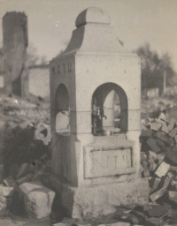
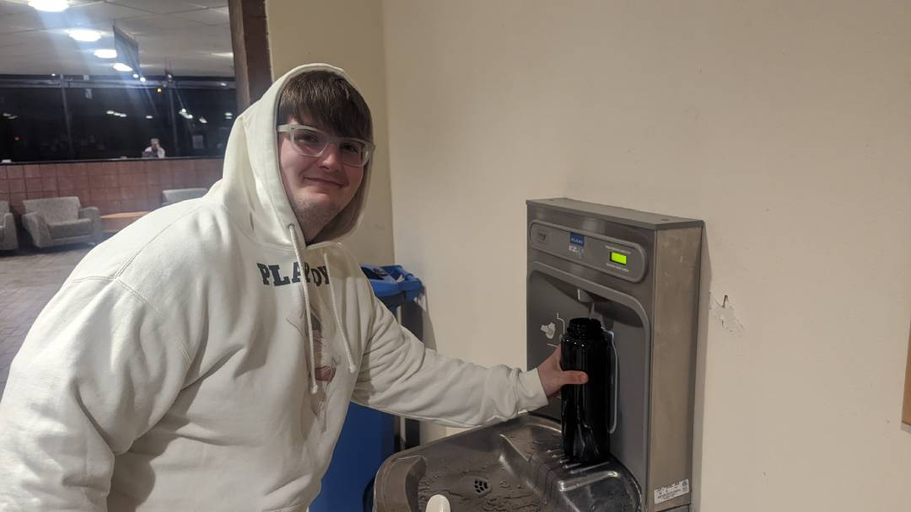

How Waterfountains Can Improve
By Miles Tallia
People have stopped loving waterfountains, sometimes I lose so much hope at this fact that I start to believe they never did. But such thoughts are not for us to have, we need to rise up, and re-convince the people of the wonders of waterfountains!
Waterfountains are an important part of our history. The lifeblood of our survival has long been an important part of our lives, but, in recent years the belief in this importance among our populaces has seemed to wane. More and more people in developed countries have grown apathetic concerning their water. People once cared, there used to be real community.
Back during the years of prohibition, one of the reasons people had been drinking so much was that they couldn't get safe water to drink. People would rather have a beer and get drunk than worry over getting good water to drink. So, the enlightened ladies who so vehemently supported prohibition came up with adding drinking stations all across town, where people would not have to worry about such trivial things, and could trust that the water they were drinking was good.
This is a picture of where some lads might have enjoyed drinking their water:
These were the good 'ol days, when people loved waterfountains. But over time they became demystified, and as people have been consistently lowering the bar in terms of public standards, people no longer trust their waterfountains. They see children putting their mouths all over the faucet (as if that should affect us!) and refuse to drink out of the faucet. The only positive coverage waterfountains have received recently has been people using their water bottles.
This is what many people see the future of waterfountains as, but we must not lose sight of what is most important to us!
We need to loudly support this wave of water bottle filling stations as fountains while strengthening the roots and adding cooling and filtering to every station. This will make the drinking experience better and better. Elkay has already begun this, but they have lost sight of the most important aspect of the waterfountain, the (and this is a horrible name but it's the only name) bubbler.
We need to take a step back and redesign this important part of the waterfountain. It is the root of most people's displeasure and it needs to be improved, fast. We need to bring our best and brightest together, and we must solve this problem. For if we fail in our pursuit of spreading the gospel that is good waterfountains, we will surely fail to be a race of humans, we may descend back into the depth of the kingdom animalia and be but waterless brutes.